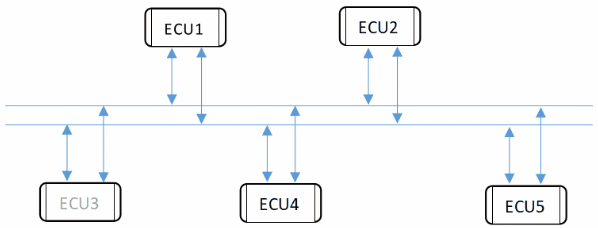
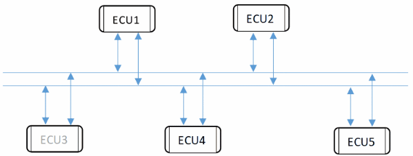
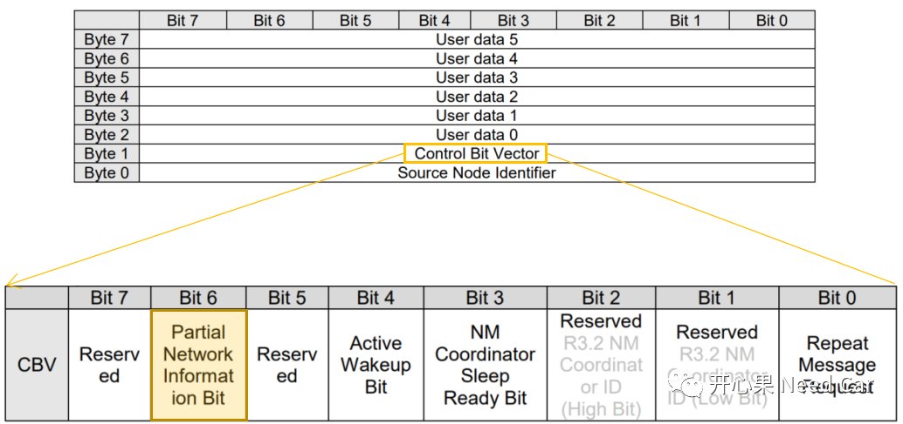
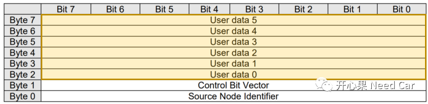
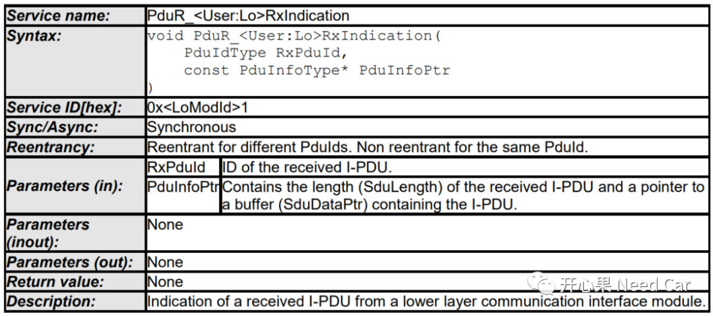

开心果 Need Car · 2022-02-26T09:06:00+08:00 · 微信原文
Partial Networking(PN)功能相对来说，稍稍复杂一点。PN功能的实现也不能单单看某个模块，因为模块间的交互信息对网络状态的切换至关重要。对于PN功能，我主要想从CanNM和ComM两个模块谈，本篇先从CanNM聊。希望能将一些概念讲透，因为在实际项目中，工具的很多配置项我们可能一知半解，在问题排查时，多少让我们摸不着头脑。因此，我想把自己解读的Autosar信息传达出来，分享一下。
提示：基于CAN总线。
为什么需要PN(Partial Network)功能呢？实质还是为了节能。没有PN功能时，一个网段内的所有ECU同醒同睡。有时，在一个网段内，可能只需要某些ECU正常工作即可，不相关的ECU没必要唤醒（费电）。所以，增加PN功能是节能的一个优选项。
举例：
不含PN功能的网段，所有ECU同睡同醒。某些工况下（A工况），其实只需要ECU2和ECU4保持工作状态即可，因为没有PN功能，所以该网段内的ECU1、ECU2、ECU3、ECU4、ECU5均保持唤醒，所以就费电了，如下所示：

含有PN功能的网段，同样A工况下，ECU2和ECU4保持正常工作状态，ECU1、ECU3、ECU5休眠，相对不含PN功能的网段，含PN功能的网段将更节能，如下所示：

在嵌入式中，任何信息的交互无非就是收和发。对于PN功能的实现也不例外，节点收到网络管理报文是PN功能讨论的基础。对于CanNM模块而言，它通过注册在CanIf中的回调函数CanNm_RxIndication()获取NM PDUs信息。拿到NM PDUs信息以后，CanNM模块开始拆解信息，通过对信息的拆解决定是否将信息进一步传递给其他模块，比如：COM、ComM、NM等。
在Autosar中，PN功能的开启需要多个模块配置PN参数选项，先说CanNM模块。在CanNM模块，首先需要配置CanNmPnEnabled参数，即CanNmPnEnabled = TRUE。
（1）如果参数CanNmPnEnabled = FALSE，CanNM收到NM PDUs直接进行后续动作，即通知NM模块等，此时PN功能忽略（无效）。只要收到有效范围的网络管理报文（一般会规定网络管理报文是一个范围，比如：0x500~0x57F），网络即可唤醒；
（2）参数CanNmPnEnabled = TRUE，也不能说PN功能开始生效。此时需要进一步判断参数CanNmAllNmMessagesKeepAwake和PNI(Partial Network Information Bit)信息。PNI在NM PDUs中所处的位置如下所示：

提示：Control Bit Vector简称CBV，和Source Node Identifier（SNI）一样，一般需要在配置工具中配置，即配置CBV和SNI在PDU中的位置。
如果PNI = 0（即没有PN请求），也就没有PN功能的进一步处理，此时如果CanNmAllNmMessagesKeepAwake = TRUE，那么接收的任何有效网络管理报文进一步处理，即可以唤醒该节点网络；如果CanNmAllNmMessagesKeepAwake = FALSE，则该NM PDUs也不用再进一步处理了，CanNM模块直接丢弃该PDU，即该节点的网络无法唤醒。
如果PNI = 1（即有PN请求），CanNM模块需要过滤User Data中的PNC(Partial Network Cluster )信息，换句话说：PN请求信息包含在User Data中。一般由PNC个数决定使用多少User Data空间，比如：需要设置9个PNC，而每个PNC占用一个bit，即需要9个bit，则使用2个User Data（2 Byte）空间即可。过滤前面聊过，可以参考Autosar网络管理：CanNM PN功能。如果过滤PNC信息，发现每个bit都与该ECU不相关，且CanNmAllNmMessagesKeepAwake = FALSE，那么CanNM直接丢掉该NM PDU，如果CanNmAllNmMessagesKeepAwake = TRUE，那么当前节点网络仍然需要被唤醒。
PNC信息可占用位置如下所示（User Data部分），如果SNI不用，则User Data可以拓展到7 Byte，将CBV配置为第一个字节，如下所示：

开发PN功能的朋友，对ERA(External Request Array )/EIRA(External and Internal Request Array )想必并不陌生。但是能说清楚这两个参数怎么用吗？老实说，我理解得可能不是很到位，此段抛砖引玉。
对于ERA/EIRA，可以理解为PN请求的状态集，而这个状态集的信息分别存储在各自的Buffer中，简单说：可以独立配置。
ERA：可以理解为外部PN请求，比如：接收到其他ECU发送来的网络管理报文，PNI置位，PNC有效。
EIRA：可以理解为外部PN请求和内部PN请求，外部PN请求和ERA一样，内部PN请求可以理解为不同channel转发过来的PN请求，比如：某个ECU包含两个CAN节点（CAN1和CAN2），且都可以作为网关节点（实际还需要关注网关类型）。CAN1收到网络管理报文，对应的PNC关联CAN2，CAN1可以内部转发给CAN2，唤醒CAN2网络，这就是内部PN请求。
内部请求实际是通过signal走COM传递给ComM，这里简单提一下，后面我们在讨论ComM和PN的关系。可以把ERA和EIRA看作信号，通过COM层标准收发接口进行信息交互。既然依赖COM，那么CanNM此时可以看作底层模块，通过PduR_CanNmRxIndication()接口通知到PDUR，PDUR再路由给COM模块，之后ComM通过COM层信号接口获取PN请求的状态信息。
PduR_CanNmRxIndication()属于配置接口，Autosar中描述如下所示：

下篇更精彩~~~
往期精彩回顾